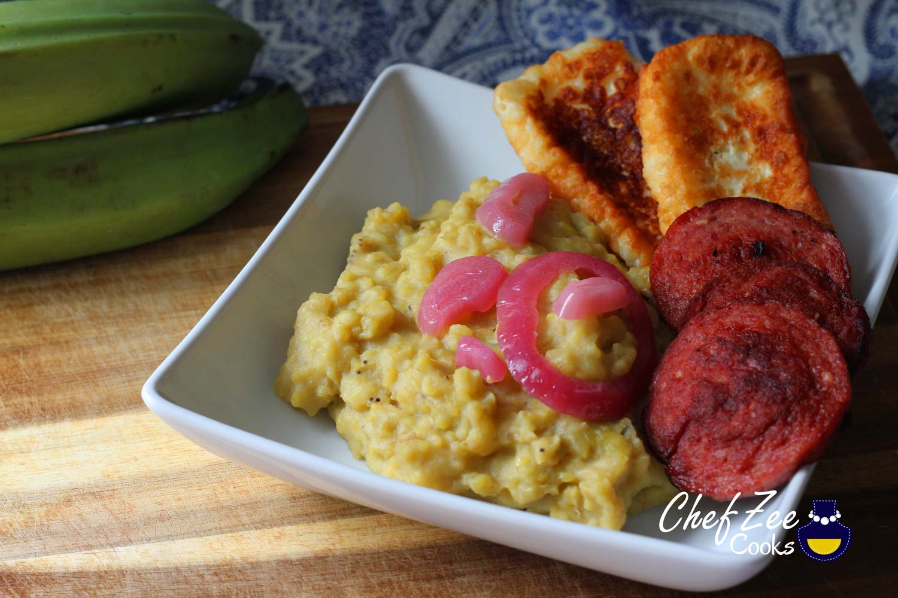

Mangu

Ingredients
- Green Plantain
- White Cheese
- Salami
- Eggs
- Butter
- Olive Oil
- Salt
Steps
- Boil plantain 45min
- Mash plantain & mix with water, butter, olive oil, and salt
- Fry salami, cheese, and egg
- Marinate white onions in apple cider vinegar and olive with salt for 20 minutes
- Saute marinated white onions for 5-10 minutes (depending on how crunchy you like your onions)
- Serve & Enjoy!